Headline results and subgroup heterogeneityGenerated 2026-06-08 12:58
Norwegian Social Assistance (SA) causes a sharp short-run drop in employment, hours, and education
enrollment — most of which fades by 2-4 years out. The persistent effects are a reorganization
of the transfer portfolio (housing benefit up, DI down), tightened mobility (more local, less far),
and modest neighborhood upgrading. Splitting the instrument into amount and duration reveals that
they act in opposite directions on labor outcomes: extra cash per month helps, longer spells hurt
— the combined amt × dur effect cancels them out. Subgroup analysis, organized below by one
subgroup lens at a time, reveals a consistent two-group narrative: SA acts as a bridge for the
labor-attached and as substitution for the labor-detached.
Spec 1 — no caseworker workload restriction. UJIVE controls: age FE, DI receipt (binary >0),
N kids FE, ever-employed, household income (binned). Balance flag = 4 (has_tm1). 2SLS scaled to 1,000 NOK.
Robust to spec variations (~95% agreement with alternative specs).
2026_05_spec1 ·
See also: full Spec 1 dashboard · Spec 1 vs Spec 4 comparison
Six stories the data tells at the headline level. Effect signs and stars are amt × dur 2SLS.
The first stage works
SA Transfers: +0.158 NOK *** at t=0 per 1 NOK of caseworker leniency, with a strong persistent effect (+0.046 NOK ***) even 2-4 years later.
Caseworkers vary in how much SA they grant for similar applicants — the leniency instrument captures this variation. Spec 1 confirms the assignment is meaningful: applicants assigned more lenient caseworkers receive substantially more SA in the year of application and remain on SA at higher rates 1-2 years out.
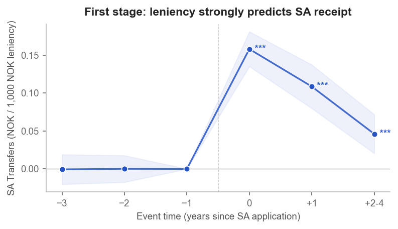
fig_first_stage.png
Sharp short-run labor disruption, then recovery
Employment (taxable > 1G) drops 8.3 pp *** at t=0; taxable income falls 3,877 NOK ***. Both back to null by t=2.
The contemporary effect on labor is large but doesn't persist: by 2-4 years out, employment and taxable income are statistically indistinguishable from baseline. The figure shows the textbook shape of a transient labor disruption — sharp dip on both the extensive margin (employment) and intensive margin (income), then return.
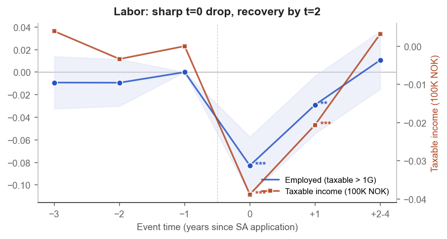
fig_labor_full_sample.png
Education enrollment postponed, not lost
College enrollment falls 2.1 pp *** at t=0 (baseline 6%) and recovers by t=1.
SA recipients reduce education enrollment in the year of application (especially college), but the effect is short-lived — they re-enroll later. Completion (has_HS, has_college) at t=2 is statistically null, so the disruption doesn't translate into lower attainment.
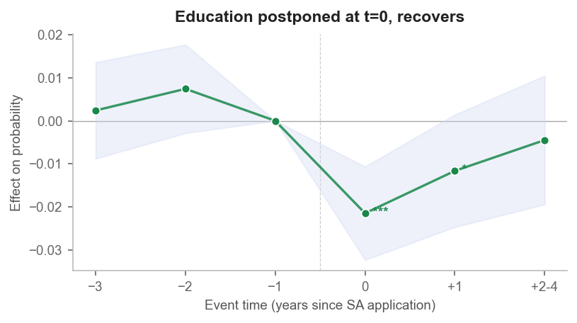
fig_education_dip.png
Persistent transfer substitution: housing UP, DI DOWN
Housing Benefit rises by 269 NOK *** by t=2; DI Amount falls by 919 NOK **.
The most persistent effect of SA is reorganization of the transfer portfolio. Recipients shift toward housing benefits (which keep growing) and away from disability insurance (which falls sharply by t=2). Other transfers — sick leave, medical benefits, scholarships, pension — also drift down. SA is partly a coordination mechanism for the broader welfare system.
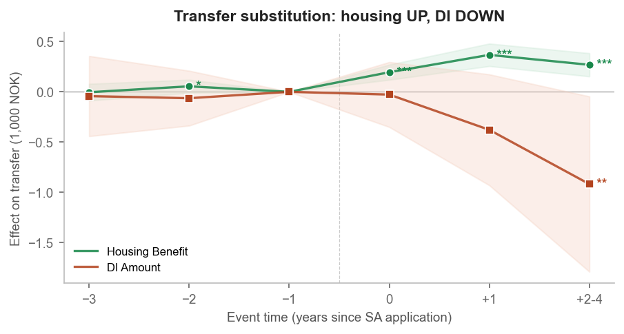
fig_transfers_substitution.png
Mobility tightens — less long-distance, more local
Across-municipality moves drop −2.6 pp ** and −1.9 pp ** at t=1, t=2; within-municipality moves rise +2.8 pp * at t=0.
SA recipients become more rooted in their current municipality but more likely to move locally. The pattern is consistent with using SA to stabilize a current life (find a different apartment in the same town) rather than to relocate.
Neighborhood housing wealth rises +5,980 NOK ** at t=1, growing to +6,870 NOK ** at t=2. Pre-trends are clean.
At the fine-grained neighborhood (grunnkrets) level, SA recipients end up in places with higher housing wealth — and the effect grows over time. Pre-trends are clean for this outcome, unlike the municipality-level housing-wealth measure and the neighborhood college-share measure (both of which have t=−2 pre-trend issues). The pattern extends to other neighborhood wealth/income measures with similar magnitudes.
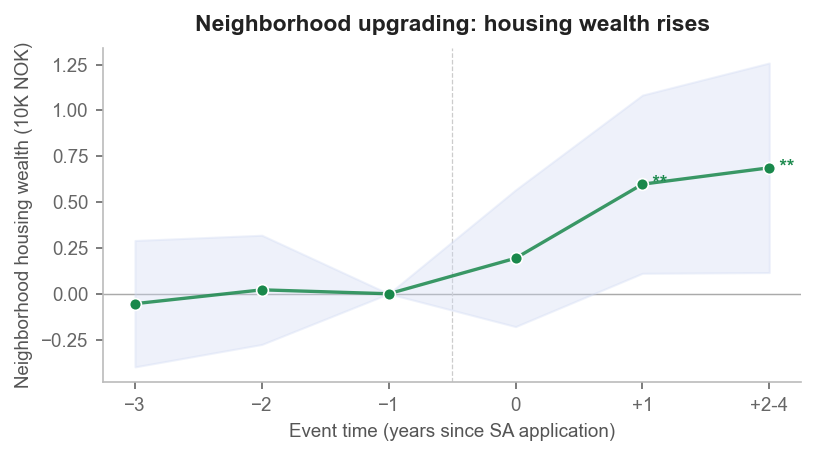
fig_neighborhood_upgrading.png
2. Amt vs Dur — same outcome, opposite directions
So far the figures show the amt × dur coefficient (total transfer). But splitting the
instrument into its two components — the amount per month and the duration in months —
reveals a striking pattern across labor outcomes: amt and dur work in opposite directions.
More cash per month is mildly beneficial; longer-duration dependence is sharply harmful. The amt × dur
combined coefficient is sometimes null precisely because the two channels cancel out. It's the
duration of dependence, not the dollar amount, that damages labor outcomes.
Labor Index: amt and dur pull in OPPOSITE directions
Amt coef on Labor Index at t=2: +0.063 (positive). Dur coef: −0.172 * (negative). pval_diff = 0.002 ***.
The combined amt_dur effect is statistically null at t=2, but it masks two opposing forces. More cash per month is weakly beneficial for the labor index. Longer SA spells are sharply harmful. The same pattern holds at t=0 and t=1, with the dur effect dominating in magnitude. It's the duration of dependence, not the amount, that damages labor outcomes.
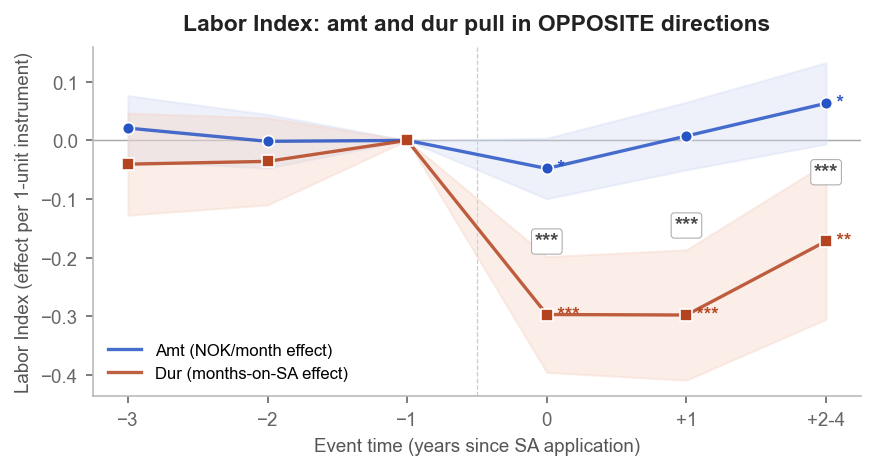
fig_amt_vs_dur_labor.png
Total income: more cash helps, longer spells hurt
Total Income at t=0: amt = +0.19 (10K NOK), dur = −0.38 (10K NOK). pval_diff = 0.0002 ***.
At every post-period, amt has positive effect on total income while dur has negative. The combined (amt_dur) effect is null. This is the clearest dollar-denominated example of the divergence: extra per-month support increases total household income; longer-duration dependence decreases it.
fig_amt_vs_dur_inctot.png
Employment: amt boosts, dur depresses
Employed (tax>1G) at t=1: amt = +0.018, dur = −0.181 ***. pval_diff < 0.001 ***.
Spec 1's headline finding that employment recovers by t=2 hides this divergence: it recovers because the amt and dur effects cancel out. The dur channel keeps pushing employment down throughout the observation window; only the amt channel's positive effect prevents a persistent net negative.
fig_amt_vs_dur_employed.png
Taxable income: amt vs dur diverge by t=2
Taxable income at t=2: amt = +0.025, dur = −0.049 *. pval_diff = 0.004 ***.
Same story for taxable income (the cleaner labor-income measure): the amt channel is mildly positive at all post-periods; the dur channel is significantly negative. Both channels are real, but the amt_dur summary obscures them.
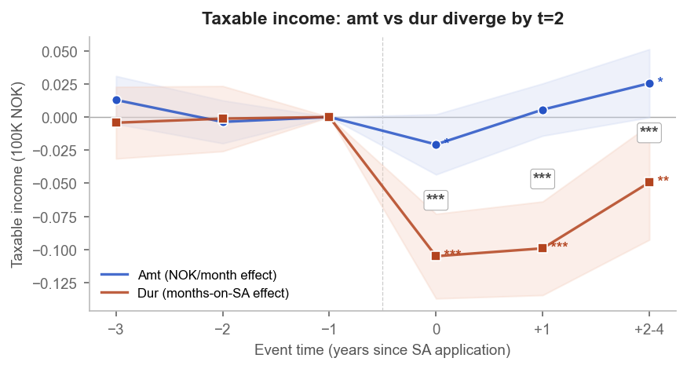
fig_amt_vs_dur_taxable.png
College enrollment: dur drives the t=0 drop
Enrolled in college at t=0: amt = −0.012 (ns) vs dur = −0.055 ***. pval_diff = 0.009 ***.
Both channels reduce college enrollment at t=0, but the dur effect is 4–5× larger. The combined amt × dur story (−0.021***) is real, but the duration component is what's actually driving it. By t=1 and t=2 both channels are insignificant — college enrollment recovers regardless of which channel you focus on. Same direction-but-bigger-dur pattern holds for the "college (relevant age)" measure at t=0.
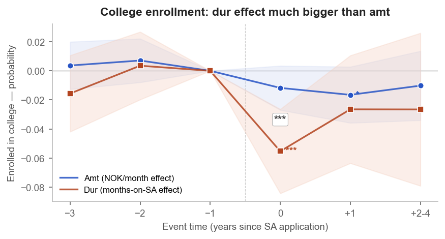
fig_amt_vs_dur_college.png
Debt amount: amt builds it, dur pays it down (t=2)
Debt (wins5) at t=2: amt = +0.39 (10K NOK) vs dur = −0.98 (10K NOK). pval_diff = 0.083 *. Same pattern in raw and wins1 versions.
The amt vs dur split reveals a debt story invisible in the combined amt_dur coefficient (which is null). Extra cash per month is associated with higher household debt by t=2 (~+3,900 NOK); longer SA spells coincide with debt reduction (~−9,800 NOK). Plausible reading: higher monthly income relaxes a borrowing constraint, while prolonged dependence forces deleveraging. Neither channel is individually significant at p<0.10 at t=2, but the divergence between them is.
fig_amt_vs_dur_debt.png
Any debt: same pattern on the extensive margin
Any household debt at t=2: amt = +0.009 (ns) vs dur = −0.054 *. pval_diff = 0.046 **.
Confirms the debt story on the binary "any debt" measure: longer SA spells reduce the probability of holding any debt at all (~5.4 pp drop at t=2); extra cash per month has no detectable effect. Caveat: any_debt has a borderline pre-trend at t=−2 for the dur channel (p=0.072) and a sig pval_diff at t=−2 (0.048). So treat this finding as suggestive — the wealth_debt amount measure (above) has cleaner pre-trends.
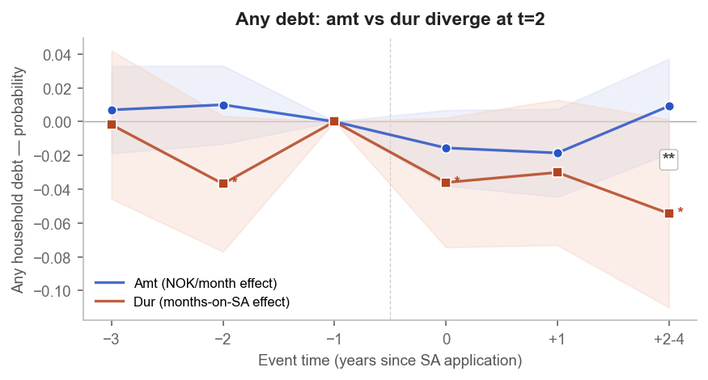
fig_amt_vs_dur_any_debt.png
Beyond the focal examples above, significant amt-vs-dur differences also appear in:
other social transfers at t=1 (amt crowds them OUT ~−1,932 NOK, dur pulls them IN ~+902 NOK; pval_diff = 0.032; same pattern for AAP);
education enrollment index at t=2 (amt +0.011 vs dur −0.155**, opposite signs);
and scholarships and child-related transfers (opposite signs at t=0).
The two outcomes with no amt-vs-dur difference are education attainment
(has_HS, has_college) and family formation (spouse, marriage, cohabitation, children) —
both are unmoved by either channel in the full sample.
3. Subgroup deep-dives
Below, each subsection picks one subgroup lens and shows several outcomes through it. The point is
to see how a single split shapes multiple parts of the SA story, rather than jumping between splits.
3a. The age divide
Age is the single sharpest cleavage in the data. Older recipients (30+) recover; younger ones (under 30) don't. The pattern shows up across labor, wealth, relationship stability, transfer use, AND education — once we view the data through the age lens, the story is remarkably consistent: SA is a bridge for the older, substitution for the younger.
Labor recovery happens only for older recipients
By t=2: Age 30+ recover to +0.098 ** on the labor index. Under-30 stay at −0.092 **. pval_diff = 0.002.
The single sharpest heterogeneity in the data. Same pattern holds for taxable income and employment >2G: prime-age recipients have a transitory labor disruption; under-30s don't recover within the observation window.
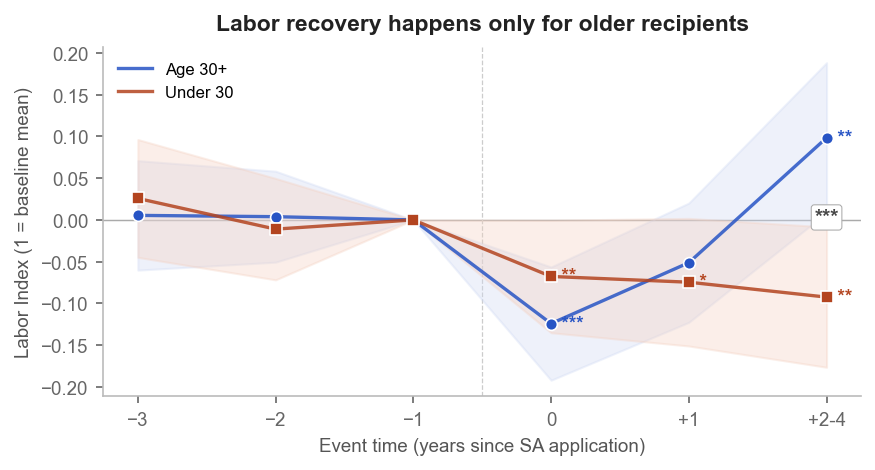
fig_labor_by_age.png
Housing wealth: older gain, younger lose
Housing wealth at t=2: Age 30+ +0.61 (10K NOK) vs Under-30 −1.23 **. Opposite-sign effects.
Asset accumulation diverges sharply by age. The 30+ group uses SA as a bridge — they keep accumulating housing wealth — while the under-30s see real wealth losses. This mirrors the labor recovery split.
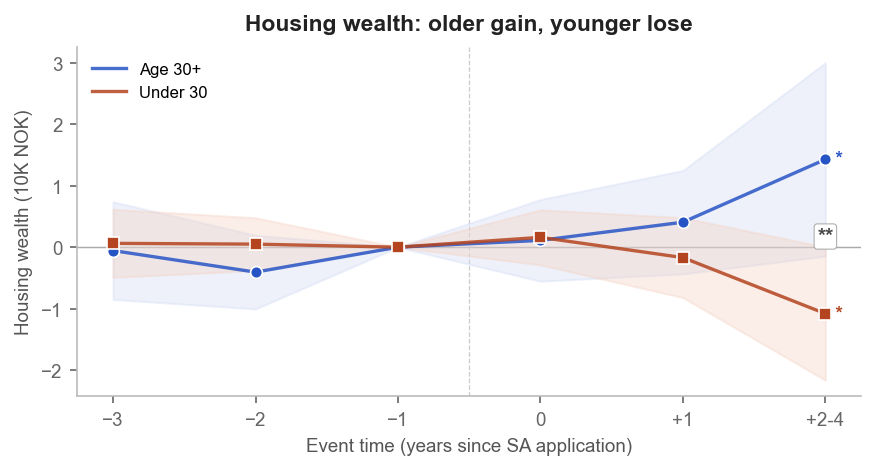
fig_wealth_by_age.png
Neighborhood housing wealth: opposite signs from t=0 onward
Grunnkrets housing wealth at t=0: Age 30+ +0.89 ** vs Under-30 −0.80 *. pval_diff = 0.002 ***. Persists through t=2.
Older recipients end up in neighborhoods with HIGHER housing wealth (upgrading); younger recipients end up in neighborhoods with LOWER wealth (downgrading). The opposite-sign divergence appears immediately at t=0 and grows by t=1 (pdiff = 0.002 ***). The geographic-upgrading story isn't 'SA improves neighborhoods on average' — it's a sharp polarization by age.
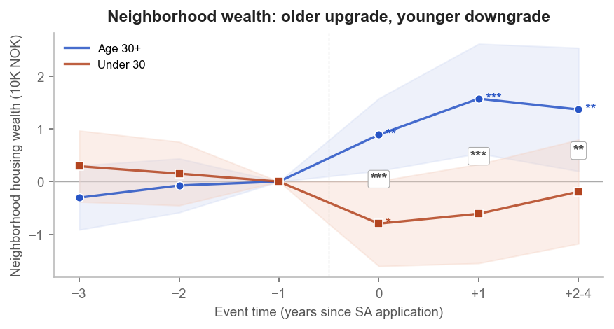
fig_neighborhood_wealth_by_age.png
Debt: older accumulate, younger deleverage
Debt (wins5) at t=2: Age 30+ +1.05 * (10K NOK) vs Under-30 −1.19 ***. pval_diff = 0.002 ***. Same pattern in raw debt.
Another clean opposite-sign result. Older recipients use SA as a buffer that allows them to take on (or maintain) debt — likely mortgage-related, consistent with the housing-wealth gain. Younger recipients are forced to pay down debt — consistent with reduced access to credit when labor incomes are damaged. Any-debt extensive margin shows the same direction (pdiff = 0.081 *).
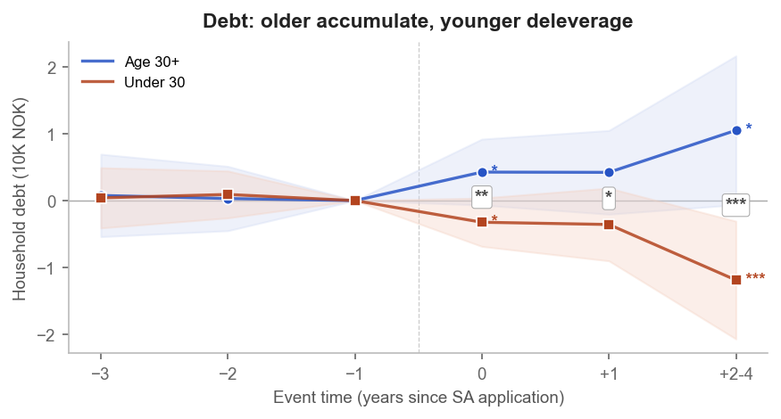
fig_debt_by_age.png
Cumulative separations: fewer for older recipients
Cumulative separations at t=2: Age 30+ −0.041 * vs Under-30 +0.004 (ns). Same direction at t=0 (30+ −0.023 *) and t=1.
Older recipients see a meaningful reduction in the cumulative rate of relationship dissolution — about 4 pp fewer separations by t=2. Under-30s show no separation effect. The pval_diff isn't individually significant but the directional consistency across all three post-periods is striking.
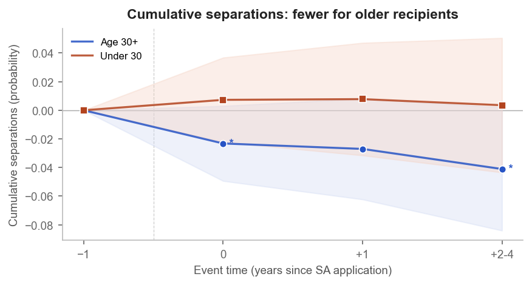
fig_separations_by_age.png
Has spouse: rises for older — driven by fewer separations, not new partnerships
Has spouse at t=1: Age 30+ +0.052 ** vs Under-30 −0.005 (ns). At t=2: 30+ +0.050 * vs Under-30 −0.019, pval_diff = 0.081 *.
Spouse-having rises ~5 pp for 30+ recipients at t=1 and t=2 but stays null for under-30s. This is not about forming new partnerships — the cumulative-separations figure above shows the mechanism: older recipients' existing partnerships hold together while under-30s' don't. SA stabilizes the relationships of recipients who already had them; it doesn't create new ones.
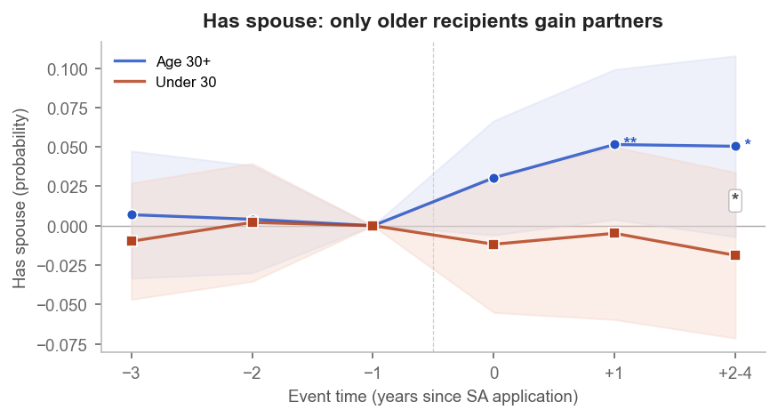
fig_spouse_by_age.png
DI substitution: only older recipients reduce DI use
DI Amount at t=2: Age 30+ −2,182 NOK ** vs Under-30 +795 NOK (ns). pval_diff = 0.011 **.
The full-sample DI substitution finding (−919 ** at t=2) is entirely driven by 30+ recipients. The under-30s, who don't recover labor, don't transition off DI either. The DI substitution and labor recovery findings are tightly linked: only those who recover labor reduce DI use.
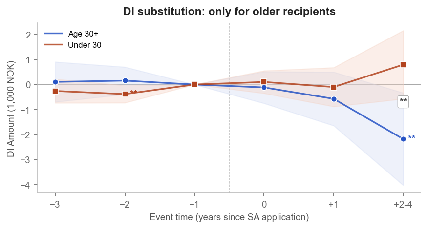
fig_di_by_age.png
Other transfers: older substitute OUT, younger pile ON
Other transfers at t=2: Age 30+ −2,521 NOK ** vs Under-30 +1,308 NOK. pval_diff = 0.010 ***. Pattern holds at every post-period.
Among the cleanest age contrasts in the data — significant opposite-sign pval_diffs at t=0, t=1, AND t=2. Older recipients reduce their use of other social transfers; younger recipients add MORE transfers on top of SA. This is the "bridge vs substitution" story in its purest form: SA helps older recipients transition off the welfare system; SA pulls younger recipients deeper into it.
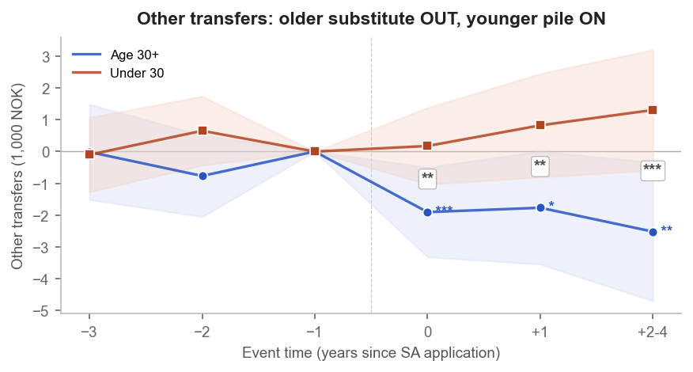
fig_othertrans_by_age.png
College enrollment dip: only the young
Enrolled in college at t=0: Age 30+ −0.012 (ns) vs Under-30 −0.035 **.
The full-sample college-enrollment dip (−2.1 pp ***) is driven by under-30 recipients. Older recipients aren't enrolled in college to begin with, so they don't show an effect. The disruption is concentrated where it matters — among the young who would otherwise be in school.
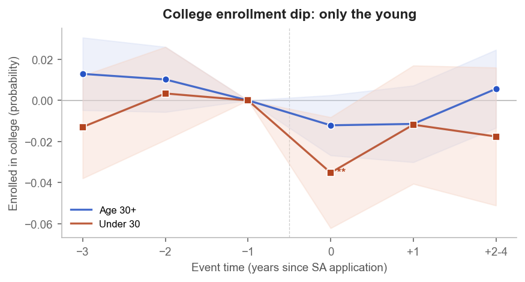
fig_college_enroll_by_age.png
3b. Prior labor market attachment
Whether you were employed in the year before applying for SA reshapes nearly every outcome. All figures in this section use the same Employed (taxable > 1G) t−1 split for consistency: the previously-employed take a bigger short-run hit but use SA as a transition; the not-employed end up on different trajectories. The clearest contrasts are in labor itself, in partnership formation, and in geographic location.
Labor disruption hits the previously employed
Employment (tax>1G) at t=0: Employed t-1 −0.111 *** vs Not employed −0.037 *.
The contemporary labor drop is mostly about people losing jobs they had. By t=2 both groups are similar (no persistent damage), but the path differs: previously-employed take a bigger hit and recover; not-employed see modest drops they don't fully reverse.
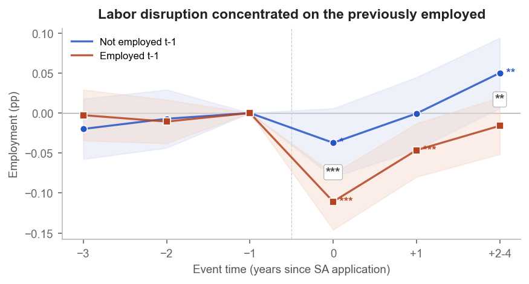
fig_labor_by_emp.png
Marriage: opposite-sign effects by prior employment
Married at t=2: Not-employed t-1 −0.026 *** vs Employed t-1 +0.028 **. pval_diff = 0.001 ***.
A clean and striking opposite-sign result. SA induces marriage formation for those with prior employment but reduces it for those without. The plausible story is that SA stabilizes the partnership prospects of the labor-attached (who already had stable income paths) but doesn't compensate for the partnership-deterring effects of weak labor attachment.
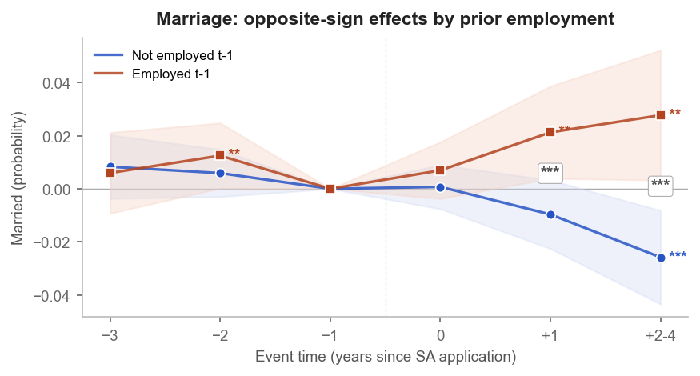
fig_married_by_emp.png
Geographic upgrading: only for the previously employed
Neighborhood housing wealth at t=1: Employed t-1 +1.10 *** (10K NOK); Not employed −0.09 (ns). pval_diff = 0.028 **. Effect persists to t=2 (Employed +1.21 ***, Not employed −0.04, pval_diff = 0.050 *).
The 'recipients end up in better neighborhoods' headline is driven entirely by people with prior labor market attachment. Not-employed t−1 recipients see no neighborhood-wealth gains. Pre-trends are clean (both groups null at t=−2 and t=−3). Same lens as the other §3b figures — the previously-employed group reaps the geographic upgrade as well as the labor recovery and marriage gains.
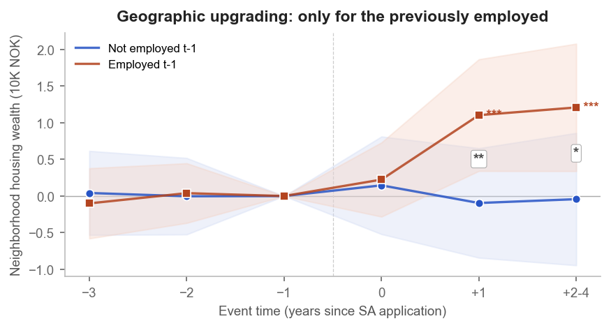
fig_neighborhood_wealth_by_emp.png
3c. Education matters
Education attainment shapes how SA propagates into wealth and mortality. HS dropouts see real wealth destruction; college-educated recipients see persistent mortality reductions. The two effects are at different ends of the human-capital spectrum.
Wealth destruction concentrated in HS dropouts
Housing wealth at t=2: HS Dropouts −2.2 *** vs Has-HS+ +0.66 (ns). pval_diff = 0.003.
HS dropouts lose housing wealth and reduce debt (both significantly) — the deleveraging story. HS+ recipients are largely insulated from wealth effects. Education attainment moderates the long-run material consequences of SA.
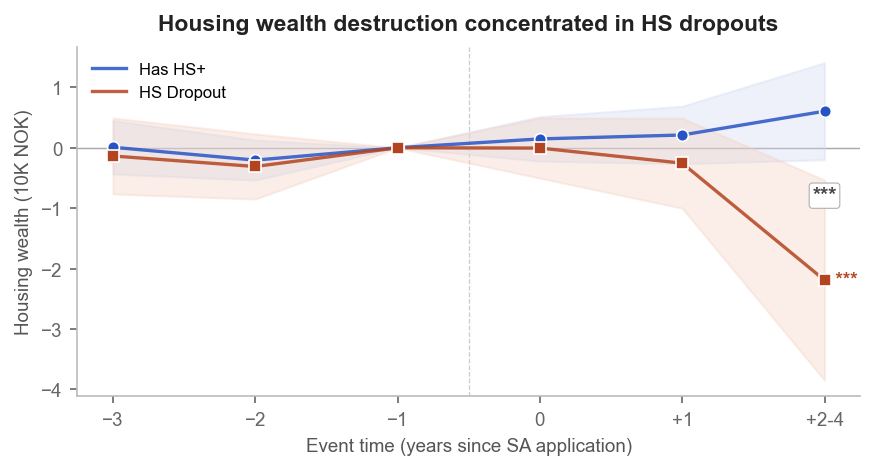
fig_wealth_by_education.png
Mortality reduction strongest for higher-educated
College+: −1.11 pp ** at t=1, persisting to −2.20 pp * at t=2. HS: similar. Primary: no effect.
Mortality reductions are concentrated in HS- and especially college-educated recipients. The 3-level split makes the gradient visible: primary-educated see no mortality effect, while higher-educated recipients benefit. Consistent with SA being most life-saving when recipients have the human capital to deploy it productively.
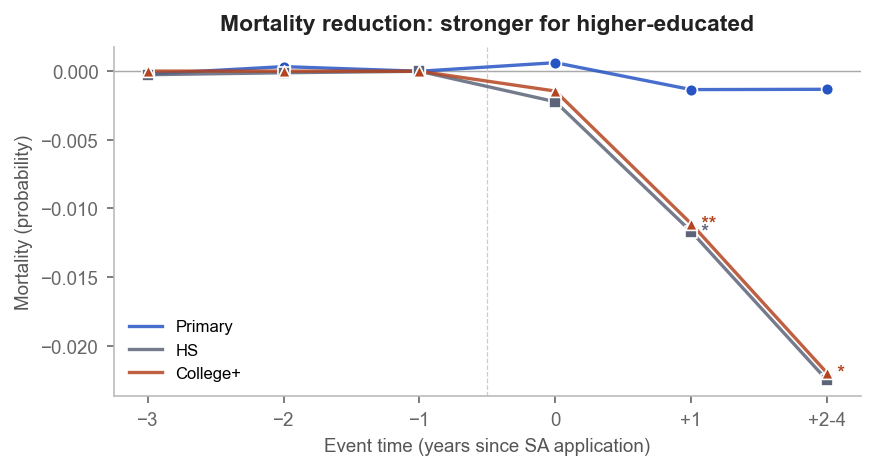
fig_mortality_by_educ.png
3d. Local labor market mediates
Where you live shapes how SA propagates. The clearest outcome through this lens is mortality reduction concentrated in concentrated (worker-unfriendly) labor markets — SA saves lives most where workers have the fewest outside options.
Mortality reduction in concentrated labor markets
High-HHI markets: t=1 mortality −0.94 pp **, persisting to −2.4 pp * at t=2. Low-HHI: no effect. pval_diff = 0.048 ** at t=0.
SA reduces mortality most where the labor market is worst for workers. Interpretation: when outside options are scarce, the material and stress relief from SA appears to translate into lower mortality risk. The pval_diff at t=0 confirms the heterogeneity is real.
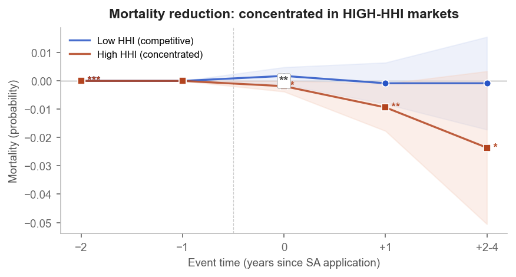
fig_mortality_by_HHI.png
3e. The recent job-loss exception
One more important subgroup-mortality finding: SA's mortality benefit is absent for people who recently lost a job. This is the only sizable group where the broader life-saving effect of SA appears to disappear.
Mortality reduction excludes recent job-losers
No-transition group: mortality −1.36 pp ** at t=2. Recent E→U group: no effect.
The split is between people who experienced an employment-to-unemployment transition in the two years before applying for SA, and everyone else. Caveat: the "no-transition" group is heterogeneous — it includes the stably employed, the stably unemployed, and U→E transitioners. So this is not "SA helps stable workers." The right read is SA's mortality benefit is absent for those whose lives were just shaken by losing a job. Recent job loss appears to neutralize the otherwise-detectable mortality benefit.
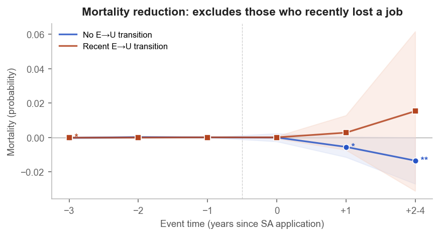
fig_mortality_by_EtoU.png
3f. Urban vs rural — big cities are different
A separate "place" dimension orthogonal to local labor concentration: are recipients in one of Norway's 10 largest cities, or not? City residents have systematically worse long-run employment effects, and the mortality benefit of SA is exclusive to non-city residents. Two opposite-sign stories from the same urban-vs-rural lens.
Employment recovery: outside the 10 largest cities only
Employment (earnings>1G) at t=2: Not Big-10 +0.020 vs Big-10 −0.046 ***. pval_diff = 0.023 **. Same opposite-sign pattern at t=1 (pval_diff = 0.047 **).
Outside the 10 largest cities, SA recipients fully recover and even slightly gain on employment by t=2. Inside Big-10 cities, SA recipients see persistent employment damage. The full-sample "labor recovery" finding masks a sharp city-vs-rest divide. The pattern is consistent across all three earnings-based employment measures — employed_0g (any earnings; pdiff = 0.012 ** at t=2), employed_1g (shown here; pdiff = 0.023 **), and employed_2g (earnings > 2G; pdiff = 0.066 * at t=2). The taxable-income measures show the same direction but with smaller magnitudes and pdiffs not always reaching significance, consistent with city residents losing "under-the-table" or marginal earnings even when their taxable-income trajectory is less affected.
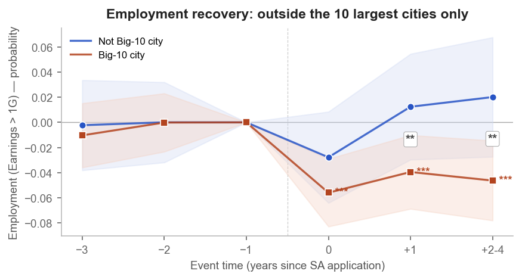
fig_employment_by_bigcity_big10.png
Mortality reduction exclusive to non-city residents
Has died at t=2: Not Big-10 −0.023 * vs Big-10 +0.002 (ns). pval_diff = 0.072 *.
Non-city residents see a meaningful 2.3 pp mortality reduction at t=2 (about double the borderline full-sample effect). City residents see no mortality benefit at all. Combined with the labor-damage finding, the pattern suggests that the welfare-supportive infrastructure or social-network advantages that translate SA into mortality benefits operate primarily in non-urban settings.
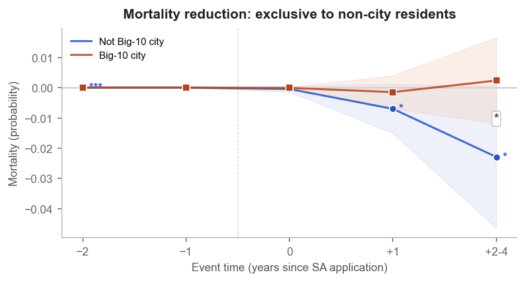
fig_mortality_by_bigcity_big10.png
⚠ Pre-trend caveat for municipality outcomes
Spec 1 finds large persistent positive effects on municipality-level characteristics
(income, wealth, college share, pop density). But 9 of 11 municipality outcomes have significant
t=−2 pre-trends (5 of 11 at t=−3). The neighborhood-level (grunnkrets) version of the same story
is much cleaner (only 2 of 11 flagged) — so report the grunnkrets findings as the main result and
treat the municipality findings as suggestive at best.
Outside that one issue, pre-trends are clean across the rest of the outcome list:
labor (0/12 outcomes flagged), transfers (1–2 of 12), wealth (1/15), family (0–1 of 9).
Bottom line
Duration of dependence drives the labor damage, not the dollar amount. When the instrument
is split into amt and dur, the two have opposite signs across labor outcomes — extra cash per
month is mildly beneficial, longer-duration dependence is sharply harmful. The combined amt × dur
effect masks this divergence.
SA is a bridge for the labor-attached. Age 30+, employed, ever-employed, HS+ recipients
take a short-run labor hit, then recover. Along the way they accumulate housing wealth, see
fewer separations from existing partners, reduce DI use, and move to better neighborhoods.
SA is substitution for the labor-detached. Young, never-employed, HS-dropout recipients
pile on other transfers, lose housing wealth, don't see relationship-stability gains, and don't
recover labor.
Place matters in two distinct ways. (a) Labor-market structure: mortality reduction
concentrates in concentrated (worker-unfriendly) labor markets, where SA's stress and material
relief appears to translate most cleanly into lower mortality risk. (b) Urban vs rural: residents
of Norway's 10 largest cities see persistent long-run employment damage and no mortality
benefit; non-city recipients fully recover labor and get the mortality benefit.
SA reduces mortality in specific subgroups. Concentrated labor markets, college-educated,
and recipients who did NOT recently experience an employment-to-unemployment transition see
persistent 1-2 pp mortality reductions. Full-sample effect is borderline.
Robustness: Spec 1's results are highly stable. Variant specs (workload restrictions,
Spec 1D/F/Fb) agree on ≥95% of (outcome, period) significance cells.